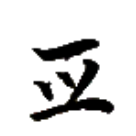
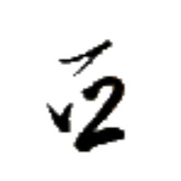
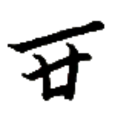
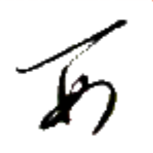
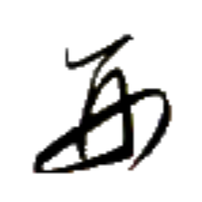
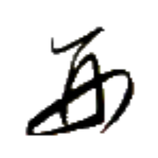
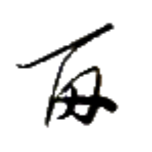
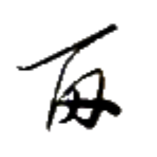
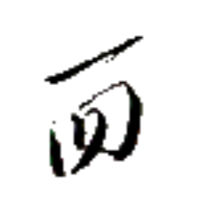
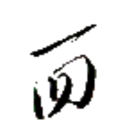

デゥㇳ· 【種】
[名詞] (さやに実らない)豆
コーヒー豆などを含む。特に、どんぐりの実を指すことが多い。
入水 リㇳ→ヌアー⤴ 【入水】
[動詞] 水に入る、沈む、(セッカイクで)入水する
[名詞] (セッカイクの)入水
クㇳ⤴ 【撃】
[動詞] 打つ、撃つ、衝撃を加える
[副詞] 突然に
撃皇 クㇳ⤴タㇺ⤴ 【撃皇】
[動詞] (セッカイクで)タムを踏み越える
[名詞] (セッカイクの減点役)タムの踏み越え
撃字 クㇳ⤴マン→ 【撃字】
[動詞] 文字を印刷する、印字する、文字を入力する
連将撃裁 ニエㇰ→ワイ→クㇳ⤴シュー→ 【連将撃裁】
[成句] しっかりと準備をした上で思い切った行動をすること

ムオウ→ 【止】
[動詞] 止める
[節要求動詞] ～するのを止める
付片 クン⤴ツオウ→ 【付片】
[名詞] 公開札、副露牌（プレイヤー全員に見えるように公開された札・牌・駒）
軸付 ラー→クン⤴ 【軸付】
[名詞] (計算機)インストラクションポインタ、実行中の命令のアドレスを示すレジスタ
終季 タ·ショㇳ→ 【終季】
[動詞] (セッカイクなどのボードゲームで) 季【季】を終わらせる、 季【季】を終わらせる宣言をする
[名詞] ニーンセッカイクのゲームルールのひとつ
麻雀のようなゲーム。
[間投詞] (セッカイクなどのボードゲームで) 季【季】を終わらせる
終値 タ·マㇰ⤴ 【終値】
[名詞] （ボードゲームにおける）季節終了得点（季【季】が終わったタイミングで得られる得点）
 


 

 
